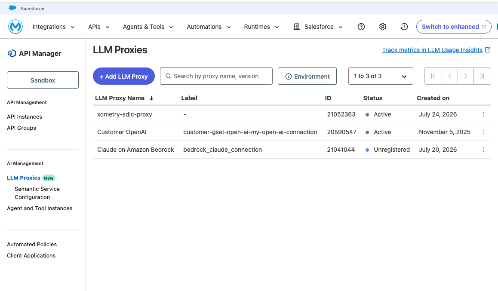
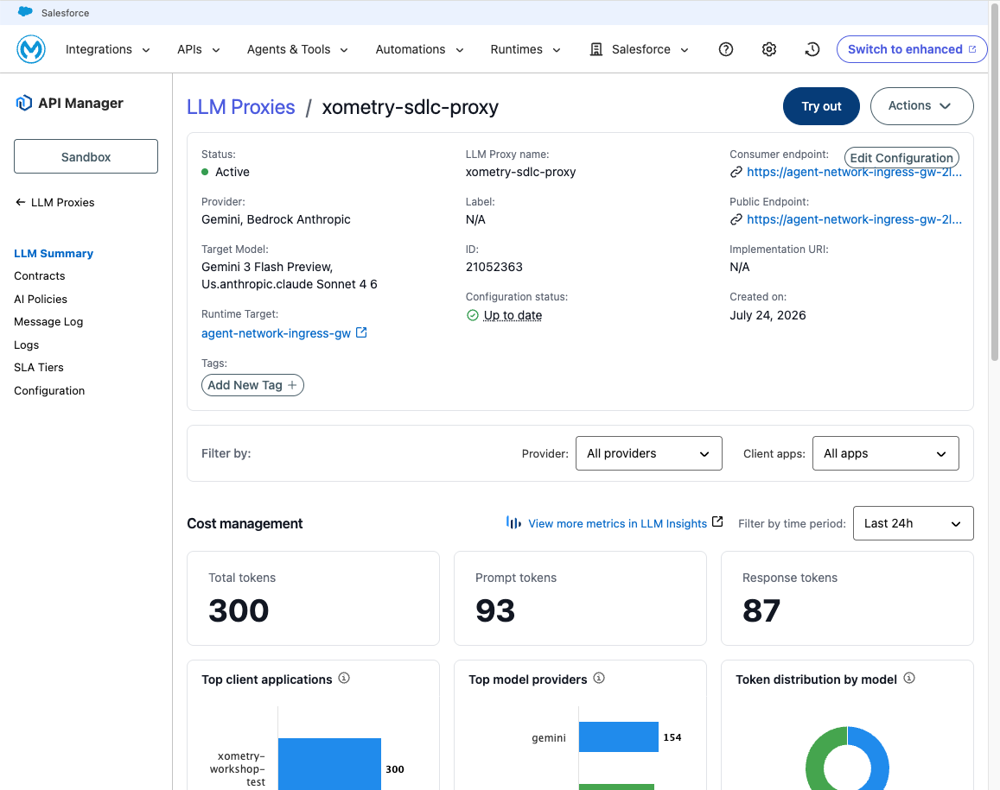
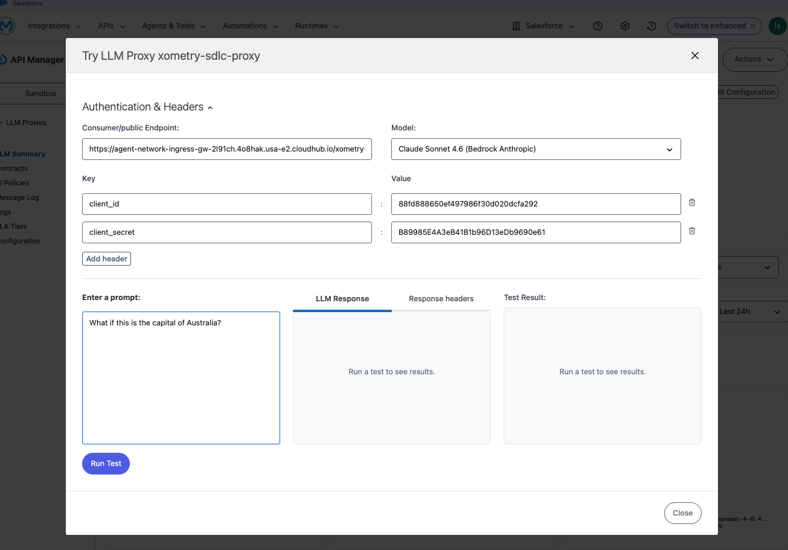
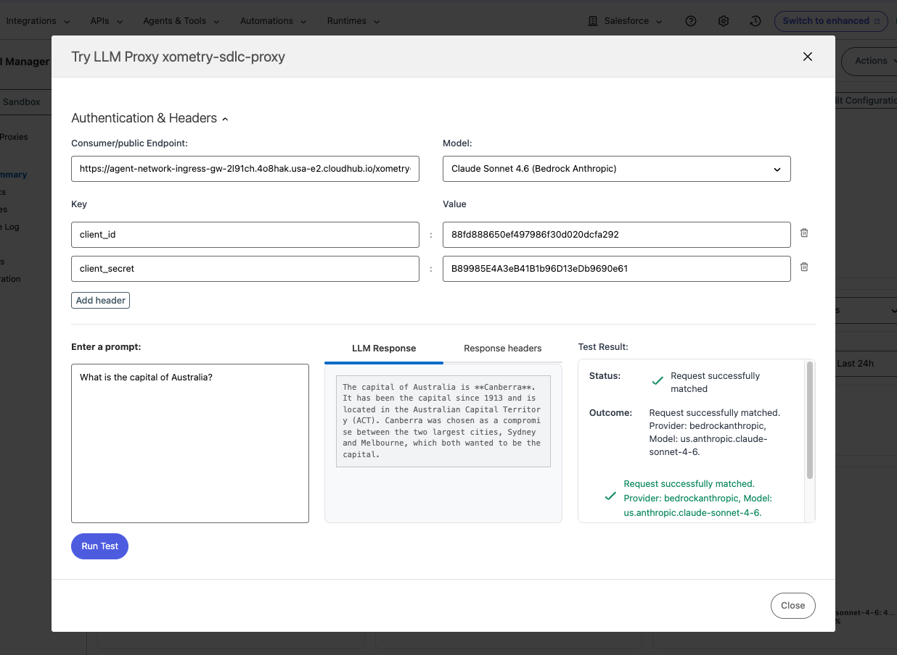

Lab 2: Model-Based Routing Strategy
Verify the proxy routes to different providers based on model selection
Overview
In Lab 1 you created an LLM Proxy with two routes. Now you'll verify that model-based routing works — the same URL routes to different providers based on the model parameter in the request.
Business scenario: Your platform team wants developers to use one URL for all LLM calls. Expensive models (Claude Sonnet) for code generation, cheaper models (Gemini Flash) for documentation and triage. The proxy makes the routing decision automatically based on what model the developer requests.
How Model-Based Routing Works
The developer never changes the URL — just the model parameter. The proxy inspects the request and routes to the matching backend.
Step 1: Open the API Manager Playground
- Navigate to API Manager (via "Go to Anypoint Platform" if you're in the new Agent Fabric experience)
- In the left nav under AI Management, click LLM Proxies
- Find
xometry-sdlc-proxyin your list

- Click into it to see the proxy summary with cost management metrics

- Click the Try out button (top right) to open the Playground
Step 2: Configure Authentication
In the Playground, add your client credentials as headers:
| Key | Value |
|---|---|
client_id |
(your Client ID from Lab 1) |
client_secret |
(your Client Secret from Lab 1) |
Step 3: Test Route A — Bedrock Claude
- In the Model dropdown, select Claude Sonnet 4.6 (Bedrock Anthropic)
- Enter a code-generation prompt:
Write a Python function that validates email addresses using regex.
- Click Run Test
- Status: "Request successfully matched"
- Outcome shows: Provider
bedrockanthropic, Modelus.anthropic.claude-sonnet-4-6 - Response contains Python code

Key observation: The request was routed to AWS Bedrock because we selected a Claude model.
Step 4: Test Route B — Gemini Flash
- In the Model dropdown, select Gemini 3 Flash Preview
- Enter a documentation prompt:
Summarize the benefits of API-led connectivity in 3 bullet points.- Click Run Test
- Status: "Request successfully matched"
- Outcome shows: Provider
gemini, Modelgemini-3-flash-preview - Response contains a concise summary
Key observation: Same URL, same client credentials — but the request was routed to Google Gemini because we selected a Gemini model.
Step 5: Compare the Results
| Test | Model Selected | Provider Hit | Use Case |
|---|---|---|---|
| Route A | Claude Sonnet 4.6 | AWS Bedrock | Code generation (expensive, powerful) |
| Route B | Gemini 3 Flash | Google Gemini | Documentation (cheaper, fast) |
"Developers hit one URL. The model parameter is the only thing that changes. The proxy handles which provider actually receives the call — no infrastructure changes, no code changes."
Key Takeaways
| Concept | What You Proved |
|---|---|
| Single URL | Developers use one endpoint regardless of provider |
| Model parameter = routing decision | Claude → Bedrock, Gemini → Google AI |
| No code changes | Switch providers by changing a dropdown/string |
| Transparent to developers | They don't need to know which backend handles their request |
Lab 2 Complete
You've verified that model-based routing works:
- Same URL, different model selection → different provider
- Playground makes it easy to test both routes
- Monitoring shows which route handled each request
In Lab 3, the developer won't even choose the model — the proxy will classify the prompt and route automatically. "Write code" → expensive model. "Summarize this" → cheap model.